第 5 章 混合控制混合仿真
本章讨论和探索混合控制（MC）混合仿真。明确定义MC混合仿真术语。解释MC混合仿真的挑战。介绍其动机以及以往的研究。然后开发MC混合仿真的方法。描述使用OpenSees、OpenFresco和Simulink/Stateflow模型实现这些方法的过程。本章最后讨论在nees@berkeley实验室使用2自由度\(\mu\)-NEES设置进行MC混合仿真测试的实验结果。
5.1 引言
5.1.1 问题定义
混合控制混合仿真术语指的是控制系统同时处于多种控制模式下进行的混合仿真。它类似于第4章的切换控制混合仿真，因为混合控制混合仿真是具有多个控制系统自由度的切换控制混合仿真。例如，如果实验设置有两个执行器，并且两者都在DC和FC模式之间独立切换，则这被称为混合控制混合仿真。在任何给定时间，一个执行器可能处于DC模式，另一个执行器可能处于FC模式。在切换控制混合仿真的情况下，只有1个控制系统自由度。该自由度要么处于DC模式，要么处于FC模式。对于此设置，不能混合控制模式。
混合控制和切换控制这两个术语经常被互换使用。然而，在本章和前一章中对两者进行了严格区分。切换控制混合仿真仅指在控制模式之间切换的1自由度实验设置。混合控制混合仿真指多个控制系统自由度独立切换。也可能存在某些执行器处于DC模式而其他执行器处于FC模式的混合仿真测试，并且这些执行器从不切换控制模式。这也被认为是混合控制混合仿真。
5.1.2 动机
当试件根据加载方向表现出非常不同的行为时，就需要MC混合仿真。这些类型的试件在结构测试中很常见。梁柱是建筑和桥梁中非常常见的结构构件。梁柱在轴向方向上比在垂直于轴向的方向上更刚性。当对隔震支座进行实验测试时，通常垂直方向使用FC加载，水平方向使用DC加载。当这些结构构件使用混合仿真进行测试时，通常在整个测试过程中保持垂直或轴向力恒定，并在水平方向对试件施加位移。
在整个测试过程中保持垂直力恒定是不现实的。此力应在测试过程中变化。保持垂直力恒定是因为垂直载荷难以计算和控制。垂直力难以计算是因为水平位移取决于垂直力，反之亦然。当垂直力在混合仿真中变化时，该力的计算与水平位移计算解耦。控制力的困难在第3.1.1节中解释。
5.1.3 以往研究
很少有研究人员进行过MC混合仿真。这里综述了两项工作。第一项是Pan等人[18]的工作。前面两章中提到的HDBR相同实验。他们进行了MC混合仿真，垂直自由度在DC和FC之间切换，水平自由度处于DC模式。垂直试算力与水平试算位移解耦，并彼此独立计算。使用初始刚度值计算每个时间步的垂直试算力，而每个时间步的水平试算位移使用DC混合仿真方法计算。然后将两个试算值同时施加到HDBR上。
第二项是Nakata等人[17]的工作，他们进行了一种MC混合仿真来研究轴向加载梁柱的P-Δ效应。他们在其实验设置中使用了伊利诺伊大学厄巴纳-香槟分校的载荷和边界条件箱。通过相应的目标位移以迭代方式对试件施加目标轴向力。使用Broyden更新[2]从测量的位移和力在每个迭代中更新梁柱的轴向刚度，计算目标位移。这不是真正的MC仿真，因为力自由度不是以FC模式控制，而是以DC模式控制以达到目标力。试算力被转换为试算位移，然后将所有控制器自由度的试算位移施加到试件上。迭代执行此过程，直到测量力等于时间步开始时计算的试算力。
5.2 MC混合仿真的方法
MC混合仿真的方法是第3.2.1节中CFC方法和第4.2.1节中切换策略的组合。MC混合仿真使用第3.2.1节中的一种CFC方法将
试算位移（\(\breve{u}\)）向量转换为试算力（\(\breve{f}\)）向量。然后使用第4.2.1节中的一种切换策略独立确定每个控制自由度的控制模式。每个控制自由度的切换策略由研究人员在测试开始前确定。这意味着可以为每个控制自由度分配不同的策略。因此，在测试过程中可能同时运行多种切换策略。
EFC方法不用于获取MC混合仿真的试算力。可以同时运行基于位移的时间积分方案和基于力的时间积分方案来计算\(\breve{u}\)和\(\breve{f}\)以及控制模式。但存在关于测量值\(\bar{u}\)和\(\bar{f}\)应如何反馈到NMR时间积分方案的问题。使用2自由度\(\mu\)-NEES实验设置（图3.20）来说明此障碍。在时间积分方案计算\(\breve{u}\)和\(\breve{f}\)之后，切换策略确定顶部执行器处于DC模式，底部执行器处于FC模式。控制系统施加\(\breve{u}_{bottom}\)和\(\breve{f}_{top}\)。然后将相应的测量值\(\bar{u}\)和\(\bar{f}\)反馈到计算驱动器。计算驱动器现在必须决定将什么测量值反馈到时间积分方案。如果它将\(\bar{f}\)向量反馈到基于位移的时间积分方案，则\(\bar{f}_{bottom}\)可能与其计算的底部执行器试算位移不对应。如果以某种方式修改\(\bar{f}_{bottom}\)以使其与\(\breve{u}_{bottom}\)更一致，则将试件的不正确状态传递给基于位移的时间积分方案。对于\(\bar{u}\)和基于力的时间积分方案也存在同样的问题。因此，EFC不作为MC混合仿真的一部分实现。
5.3 实现
MC混合仿真的实现与第4.3.1节中PSC和SSC混合仿真的实现非常相似。MC混合仿真需要两个主要组件。第一个是OpenFresco，特别是实验控制组件。第二个组件是MC混合仿真的Simulink/Stateflow模型。这些组件彼此交互并与计算驱动器交互，使MC混合仿真正常运行。
5.3.1 OpenFresco MC实验控制
OpenFresco在MC混合仿真中的作用如图5.1所示。与FC和SC混合仿真一样，Openfresco从计算驱动器接收试算变形\((\widehat{\mathbf{u}}_n)\)。OpenFresco在实验控制类中将\(\hat{\mathbf{u}}_n\)转换为\(\breve{\mathbf{f}}_n\)。用于MC混合仿真的实验控制是xPCtargetMixedCM实验控制。xPCtargetMixedCM是xPCtargetForce和xPCtargetSwitchCM的组合。与xPCtargetForce一样，它将\(\breve{\mathbf{u}}_n\)传递给ExperimentalSignalFilter类。ExperimentalSignalFilter使用ExperimentalTangentStiff类将\(\breve{\mathbf{u}}_n\)转换为\(\breve{\mathbf{f}}_n\)。xPCtargetMixedCM使用指定的切换策略确定每个控制系统自由度的控制模式，并组装控制模式向量。
如图5.1所示，它向控制系统发送这三个向量。控制系统根据控制模式向量施加位移或力。在控制系统成功施加指令值后，它读取测量位移\((\bar{\mathbf{u}}_n)\)和力
\((\bar{\mathbf{f}}_n)\)并将它们发送回xPXtargetMixedCM。xPXtargetMixedCM将\(\bar{\mathbf{u}}_n\)转换为力。然后组装\(\check{\mathbf{f}}_n\)并执行坐标变换。它被发送回计算驱动器。在组装\(\check{\mathbf{f}}_n\)时，xPXtargetMixedCM放置控制系统自由度在DC模式下的实际测量力，以及控制系统自由度在FC模式下的转换测量力。一旦计算驱动器接收到\(\check{\mathbf{f}}_n\)，它就移动到下一个时间\(n+1\)。此过程重复直到仿真完成。
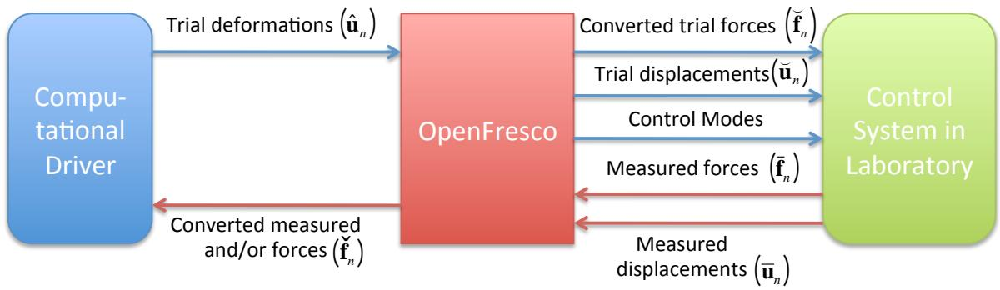
图5.1：MC混合仿真组件及其流程。
5.3.2 Simulink/Stateflow模型
本节介绍的Simlink/Stateflow模型用于MC混合仿真，其中顶部执行器处于DC模式，底部执行器在DC和FC模式之间切换。将此Simulink/Stateflow模型扩展为让两个执行器都在DC和FC模式之间切换是直接的。这会增加图5.4中Stateflow模型的复杂性。为此Simulink/Stateflow模型设计的2自由度\(\mu\)-NEES实验设置不需要顶部执行器处于FC模式，因为它相对较软，在DC模式下表现更好。
图5.2中的Simulink模型与SC混合仿真的Simulink模型（图4.3）几乎相同。唯一的可见区别是它使用xPC Target Hybrid Controller (M1/M1)而不是用于SC混合仿真的混合控制器。图5.2中不明显的另一个区别是Extract和Assemble块从SCRAMNet存储位置提取和组装二维向量，而不是像SC模型中那样仅提取标量值。
图5.3中的xPC Target Hybrid Controller (M1M1)从xPCtargetMixedCM实验控制接收目标位移（targDsp）、目标力（targFrc）和控制模式（ctrlMode）。这些值与newTarget标志一起传递到Predictor-Corrector Stateflow模型。与FC和SC混合仿真的混合控制器一样，原始测量位移和力在反馈回OpenFresco之前通过移动平均滤波器。
混合控制器
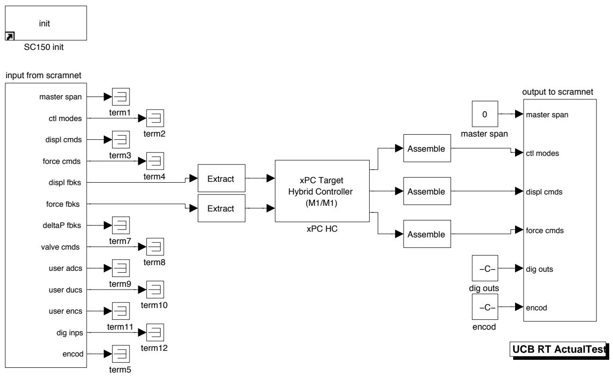
图5.2：在nees@berkeley实验室使用xPC Target实时工作室与SCRAMNet进行MC混合仿真的SimuLink模型。
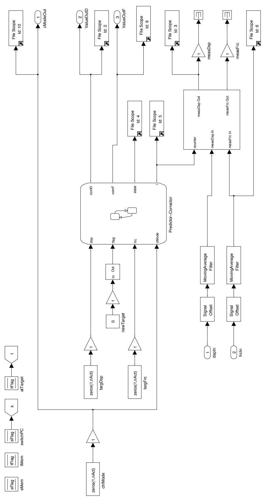
图5.3：这表示为图4.3中的xPC Target Hybrid Controller (M1M1)。它包含Stateflow模型和
Stateflow模型（图5.4）顶部的三个状态（CorrectDisp、PredictDisp和AutoSlowDownDisp）执行校正和预测位移命令，这些命令被写入SCRAMNet存储器以供MTS-STS控制器使用。这些状态本质上类似于SC Stateflow模型中的三个位移状态。在这些状态中，所有自由度都处于DC模式。
图5.4底部部分的CorrectForce、PredictForce和AutoSlowDown状态更复杂。它们负责预测和校正顶部执行器的位移和底部执行器的力。当Stateflow模型从任何一个位移状态进入CorrectForce和PredictForce状态时，MTS-STS控制器使用顶部执行器的最后测量位移和底部执行器的最后测量力作为新的零点。这与第4.3.3节中讨论的SC Stateflow模型的控制器行为相同，但更复杂，因为现在涉及两个处于不同控制模式的单独控制自由度。
xPCtargetMixedCM在内存中保留这些最后测量值，并用此偏移偏移后续指令值。CorrectForce状态将底部执行器的位移设置为0，并将其存储为当Stateflow模型移动到CorrectDisp和PredictDisp状态时要用于校正和预测的值。否则，插值和外推不会按预期工作，因为底部执行器从FC模式切换到DC模式时的位移指令是偏移值。指示何时到达新目标值的flag变量和底部执行器控制模式的cMode[0]决定状态的切换。所有MC混合仿真测试的仿真时间步设置为0.10秒。
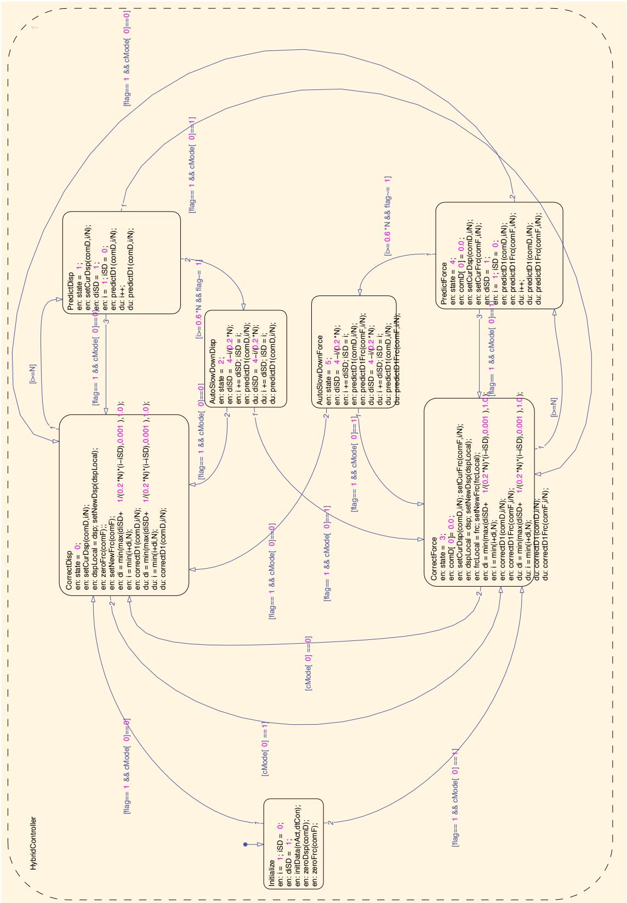
图5.4：根据控制模式预测和校正位移或力的Flow预测-校正模型。它具有自动减速功能以防止
5.4 实验结果与验证
MC混合仿真使用第3章中的2自由度模型（图3.21（右））和2自由度\(\mu\)-NEES实验设置（图3.20）进行。El Centro地面运动的前400个记录点缩放到50%。OpenFresco配置与表3.13中的相同，只是部署了xPCtargetMixedCM而不是xPCtargetForce。2自由度\(\mu\)-NEES设置中的顶部执行器始终处于DC模式，底部执行器使用算法4.2和4.4中的两种切换策略之一在DC模式和FC模式之间切换。因此测试了两种类型的MC混合仿真。
使用表3.2中参数的NME、αOS、NMF和NMR时间积分方案。对于每种时间积分方案，将MC结果与第3.4.2.3节中的OpenSees数值结果进行比较。如前所述，NME和αOS时间积分方案在2自由度OpenSees模型中数值上不收敛。因此，这两种时间积分方案的实验结果与NMI数值结果进行比较。使用CFC:Krylov和CFC:Transpose方法进行FC的MC方法会导致MTS-STS控制变得不稳定。因此，后续章节中不呈现这些结果。
如果增量测量位移和力向量的2-范数都不大于0.01，则不更新切线刚度矩阵。此滤波值在测试0.001、0.005和0.02后使用。0.01似乎在不受到控制系统噪声过度影响的情况下频繁更新切线。1-范数和\(\infty\)-范数在测试期间表现不佳。
5.4.1 基于试算力切换的MC混合仿真
本节中的结果来自仅对底部执行器使用力限制切换策略的MC混合仿真（PMC）。力限制设置为5千磅，\(f_d = 5.5\)千磅和\(f_f = 4.5\)千磅。这些结果与第3章第3.4.2.3节中的DC和CFC混合仿真结果进行比较。表5.1和5.2包含给定时间积分方案的实验结果与其时间历程分析数值对应物之间的位移误差绝对值。从这些表计算的图在附录E的E.1节中。在第3章中，节点位移结果表明，总体上FC方法优于DC方法。FC方法比DC方法更好地捕捉漂移。两者都给出形状非常相似的曲线。PMC位移误差总体上甚至比DC结果更差。尽管位移-时间历程曲线的形状与DC和CFC曲线相似，但它向相反方向漂移。唯一可与DC和CFC结果相比的是PMC:Broyden位移误差。
表5.3和5.4分别显示了节点1和2的力误差绝对值。对于NME和αOS，PMC给出比DC和CFC方法更好的结果，但对于NMF和NMR则不是。尽管PMC方法不能正确捕捉漂移，但它产生的力与数值结果相对匹配良好。
如表5.5和5.6所示，不带切换控制模式的DC和FC混合仿真的跟踪略优于PMC混合仿真期间底部执行器的跟踪。一个原因是PMC的跟踪不太好，是因为当MTS-STS控制器切换控制模式时，测量值会瞬间尖峰。PMC混合仿真期间顶部执行器在DC模式下的跟踪与DC混合仿真结果大致相同。
表5.1：各种时间积分方法在有限元分析水平上2自由度设置非线性PMC混合仿真的节点1位移结果绝对误差。
控制方法 |
NME (英寸) |
αOS (英寸) |
NMF (英寸) |
NMR (英寸) |
|---|---|---|---|---|
PMC:Broyden-最小值 |
2.97×10⁻⁷ |
7.79×10⁻⁸ |
1.05×10⁻⁵ |
N/A |
PMC:Broyden-平均值 |
0.0882 |
0.165 |
0.125 |
N/A |
PMC:Broyden-最大值 |
0.247 |
0.326 |
0.355 |
N/A |
PMC:BFGS-最小值 |
2.97×10⁻⁷ |
1.20×10⁻⁷ |
3.2-×10⁻⁵ |
1.96×10⁻⁵ |
PMC:BFGS-平均值 |
0.301 |
0.411 |
0.319 |
0.263 |
PMC:BFGS-最大值 |
0.593 |
0.710 |
0.618 |
0.585 |
PMC:Intrinsic-最小值 |
4.52×10⁻⁸ |
6.56×10⁻⁸ |
7.64×10⁻⁶ |
1.23×10⁻⁵ |
PMC:Intrinsic-平均值 |
0.229 |
0.207 |
0.167 |
0.156 |
PMC:Intrinsic-最大值 |
0.463 |
0.399 |
0.415 |
0.330 |
表5.2：各种时间积分方法在有限元分析水平上2自由度设置PMC非线性混合仿真的节点2位移结果绝对误差。
控制方法 |
NME (英寸) |
αOS (英寸) |
NMF (英寸) |
NMR (英寸) |
|---|---|---|---|---|
PMC:Broyden-最小值 |
2.98×10⁻⁷ |
1.45×10⁻⁷ |
2.49×10⁻⁶ |
N/A |
PMC:Broyden-平均值 |
0.688 |
0.926 |
0.827 |
N/A |
PMC:Broyden-最大值 |
1.63 |
1.78 |
2.04 |
N/A |
PMC:BFGS-最小值 |
2.98×10⁻⁷ |
3.23×10⁻⁷ |
7.23×10⁻⁵ |
3.75×10⁻⁵ |
PMC:BFGS-平均值 |
1.49 |
2.14 |
1.92 |
1.73 |
PMC:BFGS-最大值 |
2.80 |
3.78 |
3.43 |
3.44 |
PMC:Intrinsic-最小值 |
6.36×10⁻⁸ |
2.80×10⁻⁷ |
2.65×10⁻⁶ |
3.32×10⁻⁵ |
PMC:Intrinsic-平均值 |
1.30 |
1.10 |
0.715 |
1.04 |
PMC:Intrinsic-最大值 |
2.39 |
2.04 |
1.86 |
1.97 |
表5.3：各种时间积分方法在有限元分析水平上2自由度设置非线性PMC混合仿真的节点1力结果绝对误差。
控制方法 |
NME (千磅) |
αOS (千磅) |
NMF (千磅) |
NMR (千磅) |
|---|---|---|---|---|
PMC:Broyden-最小值 |
1.37×10⁻⁴ |
7.10×10⁻⁶ |
0.00152 |
N/A |
PMC:Broyden-平均值 |
0.769 |
0.764 |
1.79 |
N/A |
PMC:Broyden-最大值 |
3.53 |
3.85 |
6.97 |
N/A |
PMC:BFGS-最小值 |
5.30×10⁻⁵ |
6.00×10⁻⁶ |
0.00248 |
3.44×10⁻⁴ |
PMC:BFGS-平均值 |
0.803 |
0.708 |
1.47 |
1.12 |
PMC:BFGS-最大值 |
3.34 |
3.07 |
5.02 |
3.62 |
PMC:Intrinsic-最小值 |
1.14×10⁻⁴ |
6.06×10⁻⁵ |
0.00153 |
0.00302 |
PMC:Intrinsic-平均值 |
0.865 |
0.769 |
1.56 |
1.15 |
PMC:Intrinsic-最大值 |
3.82 |
3.70 |
5.20 |
4.22 |
表5.4：各种时间积分方法在有限元分析水平上2自由度设置非线性PMC混合仿真的节点2力结果绝对误差。
控制方法 |
NME (千磅) |
αOS (千磅) |
NMF (千磅) |
NMR (千磅) |
|---|---|---|---|---|
PMC:Broyden-最小值 |
1.00×10⁻⁶ |
7.10×10⁻⁶ |
4.02×10⁻⁴ |
N/A |
PMC:Broyden-平均值 |
0.175 |
0.202 |
0.300 |
N/A |
PMC:Broyden-最大值 |
0.555 |
0.781 |
1.08 |
N/A |
PMC:BFGS-最小值 |
3.00×10⁻⁷ |
1.05×10⁻⁵ |
8.82×10⁻⁴ |
6.00×10⁻⁶ |
PMC:BFGS-平均值 |
0.167 |
0.189 |
0.239 |
0.196 |
PMC:BFGS-最大值 |
0.671 |
0.871 |
0.745 |
0.618 |
PMC:Intrinsic-最小值 |
6.86×10⁻⁶ |
2.00×10⁻⁵ |
3.00×10⁻⁵ |
9.98×10⁻⁵ |
PMC:Intrinsic-平均值 |
0.170 |
0.182 |
0.254 |
0.196 |
PMC:Intrinsic-最大值 |
0.626 |
0.679 |
0.867 |
0.611 |
表5.5：各种时间积分方案在控制系统水平上2自由度设置非线性PMC混合仿真的底部执行器绝对误差。
控制方法 |
NME |
αOS |
NMF |
NMR |
|---|---|---|---|---|
PMC:Broyden-最小值 (英寸) |
9.37×10⁻⁸ |
1.22×10⁻⁸ |
1.30×10⁻⁸ |
N/A |
PMC:Broyden-平均值 (英寸) |
7.65×10⁻⁴ |
7.70×10⁻⁴ |
8.04×10⁻⁴ |
N/A |
PMC:Broyden-最大值 (英寸) |
0.00333 |
0.00378 |
0.00900 |
N/A |
PMC:Broyden-最小值 (千磅) |
0 |
0 |
0 |
N/A |
PMC:Broyden-平均值 (千磅) |
0.0330 |
0.138 |
0.0317 |
N/A |
PMC:Broyden-最大值 (千磅) |
0.185 |
0.837 |
0.211 |
N/A |
PMC:BFGS-最小值 (英寸) |
4.99×10⁻⁹ |
6.79×10⁻⁹ |
1.51×10⁻⁷ |
6.52×10⁻⁶ |
PMC:BFGS-平均值 (英寸) |
6.65×10⁻⁴ |
6.55×10⁻⁴ |
9.03×10⁻⁴ |
0.00216 |
PMC:BFGS-最大值 (英寸) |
0.00386 |
0.00325 |
0.00332 |
0.00515 |
PMC:BFGS-最小值 (千磅) |
0 |
0 |
0 |
0 |
PMC:BFGS-平均值 (千磅) |
0.0286 |
0.0764 |
0.0507 |
0.0368 |
PMC:BFGS-最大值 (千磅) |
0.253 |
0.306 |
0.219 |
0.277 |
PMC:Intrinsic-最小值 (英寸) |
4.82×10⁻⁸ |
5.02×10⁻⁸ |
2.50×10⁻⁸ |
1.66×10⁻⁸ |
PMC:Intrinsic-平均值 (英寸) |
8.84×10⁻⁴ |
8.38×10⁻⁴ |
0.00140 |
7.06×10⁻⁴ |
PMC:Intrinsic-最大值 (英寸) |
0.00375 |
0.00354 |
0.00557 |
0.00324 |
PMC:Intrinsic-最小值 (千磅) |
0 |
0 |
0 |
0 |
PMC:Intrinsic-平均值 (千磅) |
0.0281 |
0.0472 |
0.0563 |
0.0419 |
PMC:Intrinsic-最大值 (千磅) |
0.178 |
0.227 |
0.398 |
0.323 |
表5.6：各种时间积分方案在控制系统水平上2自由度设置非线性PMC混合仿真的顶部执行器绝对误差。
控制方法 |
NME |
αOS |
NMF |
NMR |
|---|---|---|---|---|
PMC:Broyden-最小值 (英寸) |
1.41×10⁻⁸ |
1.25×10⁻⁹ |
8.67×10⁻¹¹ |
N/A |
PMC:Broyden-平均值 (英寸) |
7.38×10⁻⁴ |
9.33×10⁻⁴ |
6.20×10⁻⁴ |
N/A |
PMC:Broyden-最大值 (英寸) |
0.00587 |
0.0475 |
0.00570 |
N/A |
PMC:BFGS-最小值 (英寸) |
1.68×10⁻⁹ |
4.84×10⁻⁹ |
1.06×10⁻⁸ |
1.98×10⁻¹¹ |
PMC:BFGS-平均值 (英寸) |
5.53×10⁻⁴ |
5.67×10⁻⁴ |
5.40×10⁻⁴ |
5.57×10⁻⁴ |
PMC:BFGS-最大值 (英寸) |
0.00642 |
0.00497 |
0.00528 |
0.00684 |
PMC:Intrinsic-最小值 (英寸) |
9.74×10⁻⁹ |
5.14×10⁻⁹ |
2.72×10⁻⁹ |
3.32×10⁻⁹ |
PMC:Intrinsic-平均值 (英寸) |
7.47×10⁻⁴ |
6.12×10⁻⁴ |
0.00144 |
8.13×10⁻⁴ |
PMC:Intrinsic-最大值 (英寸) |
0.00579 |
0.00469 |
0.00565 |
0.00564 |
图5.5显示了使用NME的PMC:Broyden的底部执行器力-时间历程曲线和混合仿真测试期间的控制模式。当控制模式为零时，MTS-STS控制器处于DC模式，当它不为零时处于FC模式。这
最匹配数值结果。相比之下，图5.6中的图显示了最差的结果，它使用αOS与BGFS。从图E.10中，BFGS方法在1.5到2秒标记之间开始与数值结果相比向相反方向漂移。这是试件第一次进入非线性区域。通过检查图5.5和5.6，使用NME的PMC:Broyden在此时间段处于DC模式，使用αOS的PMC:BFGS处于FC模式。否则，两者产生几乎相同的控制模式。

图5.5：使用NME的PMC:Broyden的底部执行器控制模式和试算力随时间变化的图。
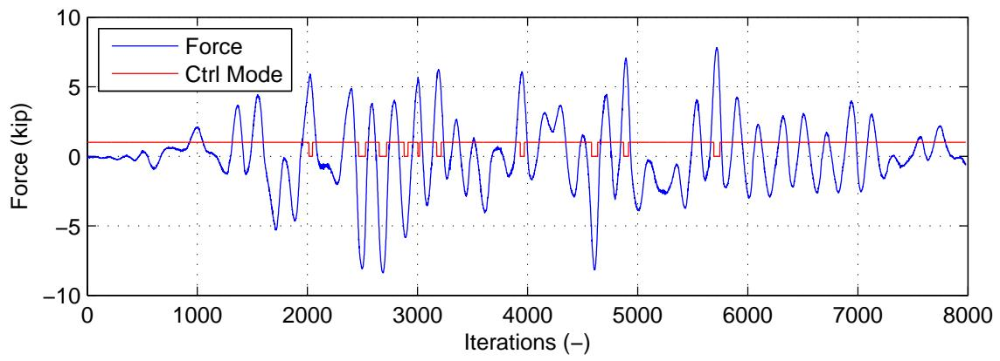
图5.6：使用αOS的PMC:BFGS的底部执行器控制模式和试算力随时间变化的图。
5.4.2 基于割线刚度切换的MC混合仿真
本节介绍使用基于割线刚度切换（SMC）的MC混合仿真结果。割线刚度切换限制设置为50千磅/英寸。\(k_d = 45\)千磅/英寸。和\(k_f = 55\)千磅/英寸。初始刚度矩阵的\(k_{11}\)为81千磅/英寸。表5.7和5.8分别包含节点1和2的绝对位移误差。NMF和NMR结果正确捕捉漂移，除了SMC:BFGS方法。NME和αOS与数值结果匹配不佳。表5.9和5.10显示力误差与DC、FC和PMC混合仿真结果大致处于同一水平。检查力误差时，没有方法或时间积分方案真正突出。表5.11和5.12显示了MTS-STS控制系统的跟踪性能。跟踪性能与其他相似。
表5.7：各种时间积分方法在有限元分析水平上2自由度设置非线性SMC混合仿真的节点1位移结果绝对误差。
控制方法 |
NME (英寸) |
αOS (英寸) |
NMF (英寸) |
NMR (英寸) |
|---|---|---|---|---|
SMC:Broyden-最小值 |
0 |
3.45×10⁻⁷ |
9.73×10⁻⁶ |
1.68×10⁻⁵ |
SMC:Broyden-平均值 |
0.422 |
0.262 |
0.0529 |
0.0677 |
SMC:Broyden-最大值 |
0.738 |
0.505 |
0.271 |
0.221 |
SMC:BFGS-最小值 |
5.63×10⁻⁸ |
6.28×10⁻⁸ |
6.39×10⁻⁵ |
5.59×10⁻⁵ |
SMC:BFGS-平均值 |
0.309 |
0.188 |
0.0731 |
0.400 |
SMC:BFGS-最大值 |
0.617 |
0.436 |
0.316 |
0.687 |
SMC:Intrinsic-最小值 |
2.97×10⁻⁷ |
3.20×10⁻⁸ |
2.46×10⁻⁵ |
2.19×10⁻⁵ |
SMC:Intrinsic-平均值 |
0.356 |
0.137 |
0.162 |
0.0962 |
SMC:Intrinsic-最大值 |
0.675 |
0.341 |
0.403 |
0.305 |
SMC混合仿真的最佳时间积分方案是NMF。以下图检查了切线刚度估计。Broyden方法（图5.7）最活跃，其次是BFGS（图5.8），然后是Intrinsic（图5.9）。控制模式
表5.8：各种时间积分方法在有限元分析水平上2自由度设置SMC非线性混合仿真的节点2位移结果绝对误差。
控制方法 |
NME (英寸) |
αOS (英寸) |
NMF (英寸) |
NMR (英寸) |
|---|---|---|---|---|
SMC:Broyden-最小值 |
2.98×10⁻⁷ |
6.10×10⁻⁷ |
5.09×10⁻⁵ |
5.05×10⁻⁵ |
SMC:Broyden-平均值 |
2.07 |
1.91 |
0.279 |
0.416 |
SMC:Broyden-最大值 |
3.59 |
3.62 |
1.19 |
1.16 |
SMC:BFGS-最小值 |
2.98×10⁻⁷ |
3.33×10⁻⁷ |
7.32×10⁻⁵ |
4.71×10⁻⁵ |
SMC:BFGS-平均值 |
1.52 |
0.864 |
0.355 |
1.84 |
SMC:BFGS-最大值 |
3.02 |
2.08 |
1.37 |
3.29 |
SMC:Intrinsic-最小值 |
2.98×10⁻⁷ |
1.51×10⁻⁷ |
9.40×10⁻⁶ |
6.46×10⁻⁵ |
SMC:Intrinsic-平均值 |
1.60 |
0.542 |
0.717 |
0.693 |
SMC:Intrinsic-最大值 |
3.05 |
1.40 |
1.82 |
1.85 |
表5.9：各种时间积分方法在有限元分析水平上2自由度设置非线性SMC混合仿真的节点1力结果绝对误差。
控制方法 |
NME (千磅) |
αOS (千磅) |
NMF (千磅) |
NMR (千磅) |
|---|---|---|---|---|
SMC:Broyden-最小值 |
5.87×10⁻⁶ |
1.74×10⁻⁴ |
9.05×10⁻⁴ |
0.00237 |
SMC:Broyden-平均值 |
0.776 |
1.19 |
1.46 |
1.04 |
SMC:Broyden-最大值 |
3.55 |
4.27 |
5.02 |
4.87 |
SMC:BFGS-最小值 |
4.03×10⁻⁴ |
2.85×10⁻⁴ |
6.51×10⁻⁴ |
0.00336 |
SMC:BFGS-平均值 |
0.814 |
1.28 |
1.42 |
1.12 |
SMC:BFGS-最大值 |
3.68 |
4.82 |
5.13 |
3.87 |
SMC:Intrinsic-最小值 |
9.52×10⁻⁵ |
9.04×10⁻⁵ |
2.38×10⁻⁴ |
2.56×10⁻⁴ |
SMC:Intrinsic-平均值 |
0.798 |
0.984 |
1.38 |
0.894 |
SMC:Intrinsic-最大值 |
3.35 |
4.45 |
5.03 |
3.40 |
表5.10：各种时间积分方法在有限元分析水平上2自由度设置非线性SMC混合仿真的节点2力结果绝对误差。
控制方法 |
NME (千磅) |
αOS (千磅) |
NMF (千磅) |
NMR (千磅) |
|---|---|---|---|---|
SMC:Broyden-最小值 |
7.40×10⁻⁶ |
9.00×10⁻⁶ |
7.14×10⁻⁴ |
6.94×10⁻⁵ |
SMC:Broyden-平均值 |
0.175 |
0.208 |
0.268 |
0.221 |
SMC:Broyden-最大值 |
0.865 |
0.704 |
0.887 |
0.870 |
SMC:BFGS-最小值 |
5.83×10⁻⁵ |
1.30×10⁻⁵ |
2.93×10⁻⁴ |
3.37×10⁻⁴ |
SMC:BFGS-平均值 |
0.175 |
0.299 |
0.263 |
0.219 |
SMC:BFGS-最大值 |
0.671 |
1.06 |
0.848 |
0.987 |
SMC:Intrinsic-最小值 |
1.49×10⁻⁵ |
2.90×10⁻⁵ |
1.21×10⁻⁴ |
2.86×10⁻⁴ |
SMC:Intrinsic-平均值 |
0.171 |
0.240 |
0.245 |
0.176 |
SMC:Intrinsic-最大值 |
0.610 |
0.962 |
0.881 |
0.695 |
表5.11：各种时间积分方案在控制系统水平上2自由度设置非线性SMC混合仿真的底部执行器绝对误差。
控制方法 |
NME |
αOS |
NMF |
NMR |
|---|---|---|---|---|
SMC:Broyden-最小值 (英寸) |
5.24×10⁻¹⁰ |
2.02×10⁻⁸ |
4.31×10⁻⁹ |
3.04×10⁻⁹ |
SMC:Broyden-平均值 (英寸) |
9.96×10⁻⁴ |
8.40×10⁻⁴ |
7.85×10⁻⁴ |
9.18×10⁻⁴ |
SMC:Broyden-最大值 (英寸) |
0.00694 |
0.00493 |
0.00431 |
0.00671 |
SMC:Broyden-最小值 (千磅) |
0 |
0 |
0 |
0 |
SMC:Broyden-平均值 (千磅) |
0.0167 |
0.0362 |
0.0130 |
0.0260 |
SMC:Broyden-最大值 (千磅) |
0.163 |
0.172 |
0.0877 |
0.213 |
SMC:BFGS-最小值 (英寸) |
2.47×10⁻⁹ |
6.75×10⁻⁹ |
1.60×10⁻⁹ |
1.08×10⁻⁶ |
SMC:BFGS-平均值 (英寸) |
0.00127 |
0.00130 |
0.00139 |
0.00159 |
SMC:BFGS-最大值 (英寸) |
0.00515 |
0.00676 |
0.00498 |
0.00329 |
SMC:BFGS-最小值 (千磅) |
0 |
0 |
0 |
0 |
SMC:BFGS-平均值 (千磅) |
0.0318 |
0.0471 |
0.0306 |
0.0448 |
SMC:BFGS-最大值 (千磅) |
0.165 |
0.220 |
0.138 |
0.250 |
SMC:Intrinsic-最小值 (英寸) |
3.68×10⁻⁹ |
1.29×10⁻⁹ |
3.61×10⁻⁹ |
2.79×10⁻¹⁰ |
SMC:Intrinsic-平均值 (英寸) |
0.00104 |
0.00119 |
7.80×10⁻⁴ |
9.88×10⁻⁴ |
SMC:Intrinsic-最大值 (英寸) |
0.00671 |
0.00524 |
0.00409 |
0.00536 |
SMC:Intrinsic-最小值 (千磅) |
0 |
0 |
0 |
0 |
SMC:Intrinsic-平均值 (千磅) |
0.0178 |
0.0194 |
0.290 |
0.0295 |
SMC:Intrinsic-最大值 (千磅) |
0.117 |
0.171 |
0.178 |
0.240 |
表5.12：各种时间积分方案在控制系统水平上2自由度设置非线性SMC混合仿真的顶部执行器绝对误差。
控制方法 |
NME |
αOS |
NMF |
NMR |
|---|---|---|---|---|
SMC:Broyden-最小值 (英寸) |
4.69×10⁻⁹ |
2.19×10⁻⁸ |
5.99×10⁻⁹ |
4.15×10⁻⁹ |
SMC:Broyden-平均值 (英寸) |
7.75×10⁻⁴ |
5.92×10⁻⁴ |
6.88×10⁻⁴ |
0.00134 |
SMC:Broyden-最大值 (英寸) |
0.00532 |
0.00609 |
0.00531 |
0.00603 |
SMC:BFGS-最小值 (英寸) |
8.53×10⁻¹⁰ |
6.34×10⁻⁹ |
6.88×10⁻⁹ |
1.98×10⁻⁰⁹ |
SMC:BFGS-平均值 (英寸) |
6.57×10⁻⁴ |
5.09×10⁻⁴ |
6.35×10⁻⁴ |
6.03×10⁻⁴ |
SMC:BFGS-最大值 (英寸) |
0.00487 |
0.00538 |
0.00552 |
0.00546 |
SMC:Intrinsic-最小值 (英寸) |
6.97×10⁻¹⁰ |
1.42×10⁻⁸ |
4.71×10⁻¹⁰ |
6.81×10⁻⁹ |
SMC:Intrinsic-平均值 (英寸) |
5.53×10⁻⁴ |
5.42×10⁻⁴ |
5.53×10⁻⁴ |
6.22×10⁻⁴ |
SMC:Intrinsic-最大值 (英寸) |
0.00459 |
0.00415 |
0.00485 |
0.00501 |
在使用BFGS方法时切换最频繁。其他方法仅切换一次控制模式。在这三种方法中，Broyden方法在有限元分析水平上产生最佳结果，但它并不比BFGS方法好多少。Intrinsic方法的误差是BFGS方法误差的两倍。
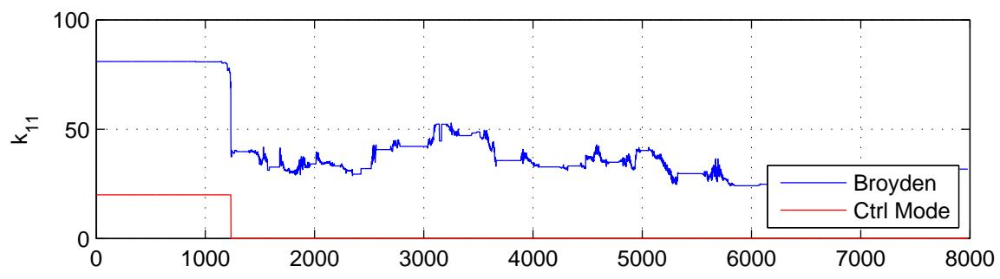

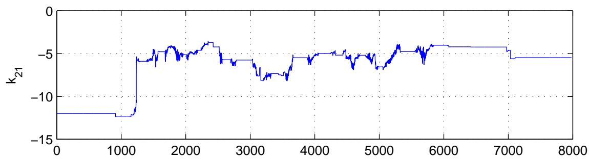
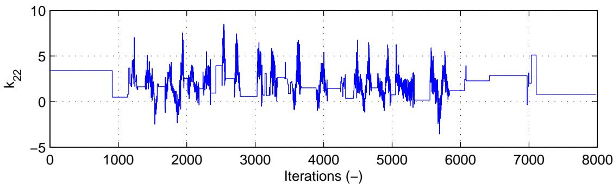
图5.7：使用NME的PMC:Broyden的底部执行器控制模式和试算力随时间变化的图。
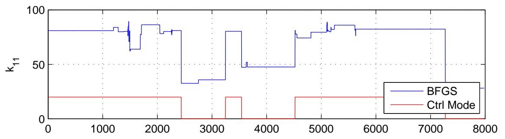
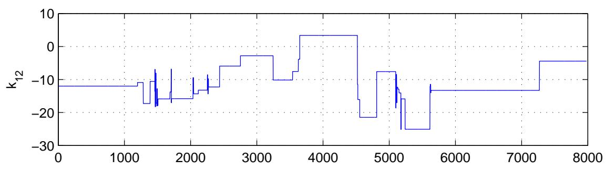
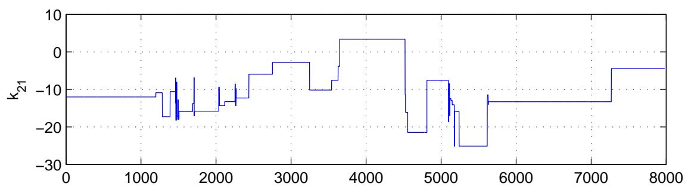
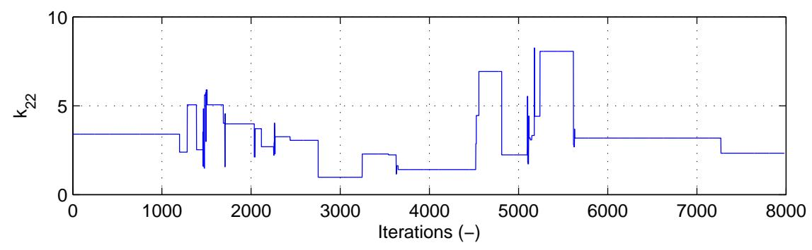
图5.8：使用αOS的PMC:BFGS的底部执行器控制模式和试算力随时间变化的图。
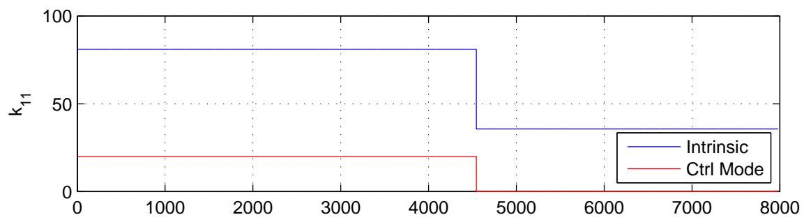
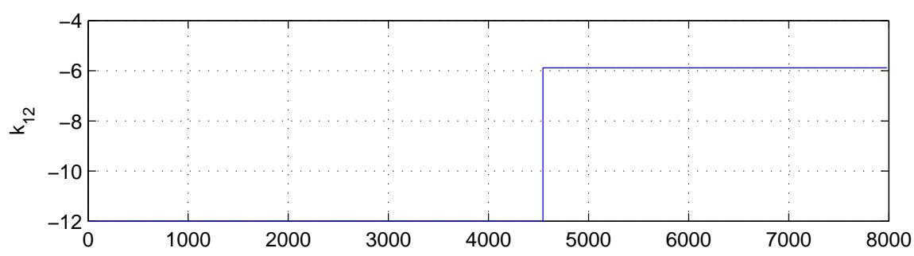
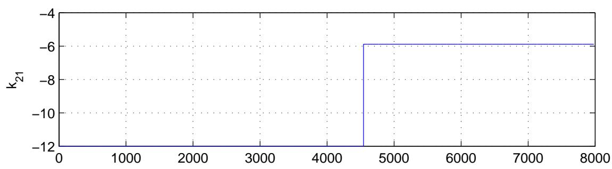
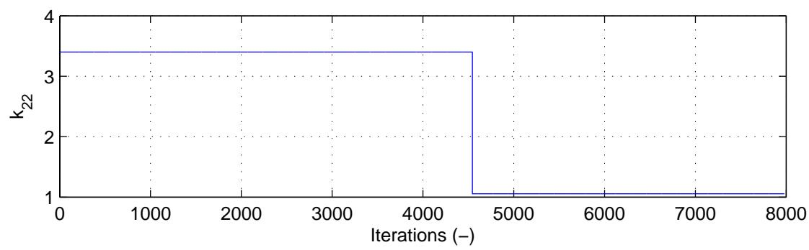
图5.9：使用αOS的PMC:BFGS的底部执行器控制模式和试算力随时间变化的图。
5.4.3 实验结果总结
这些实验结果表明，即使结果不是最好的，MC混合仿真也是可行的混合仿真类型。特别是，PMC混合仿真结果总体上略优于SMC混合仿真结果。PMC似乎比SMC更好地捕捉试件行为的变化。这可能是由几个原因造成的。割线刚度值限制太高，切线刚度估计不准确。可能只是这些原因之一，或者两者共同作用。MC混合仿真不比第3章中的DC和FC混合仿真提供更好的控制系统跟踪性能。